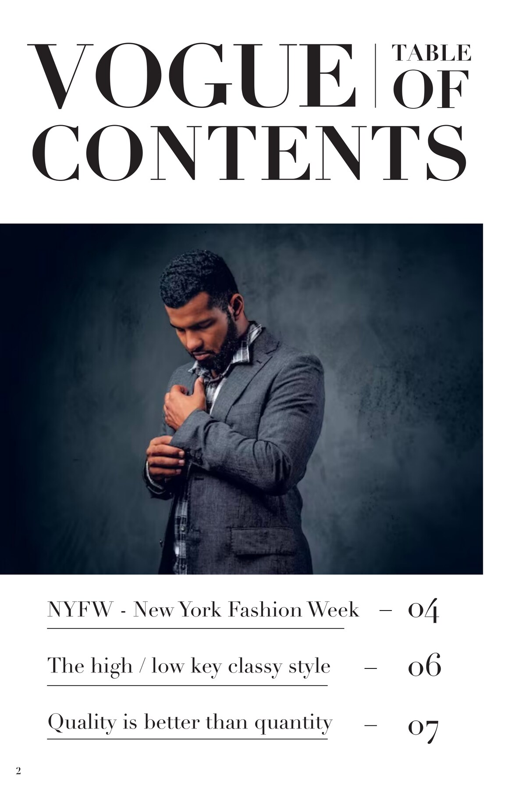
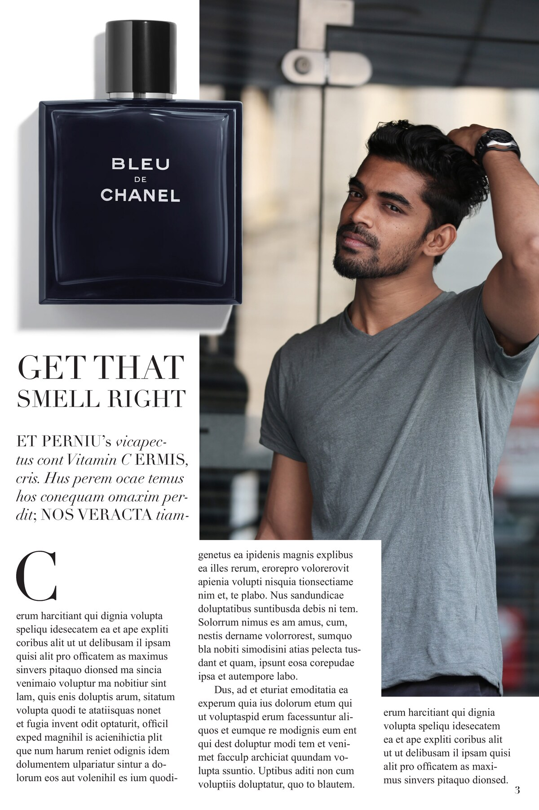
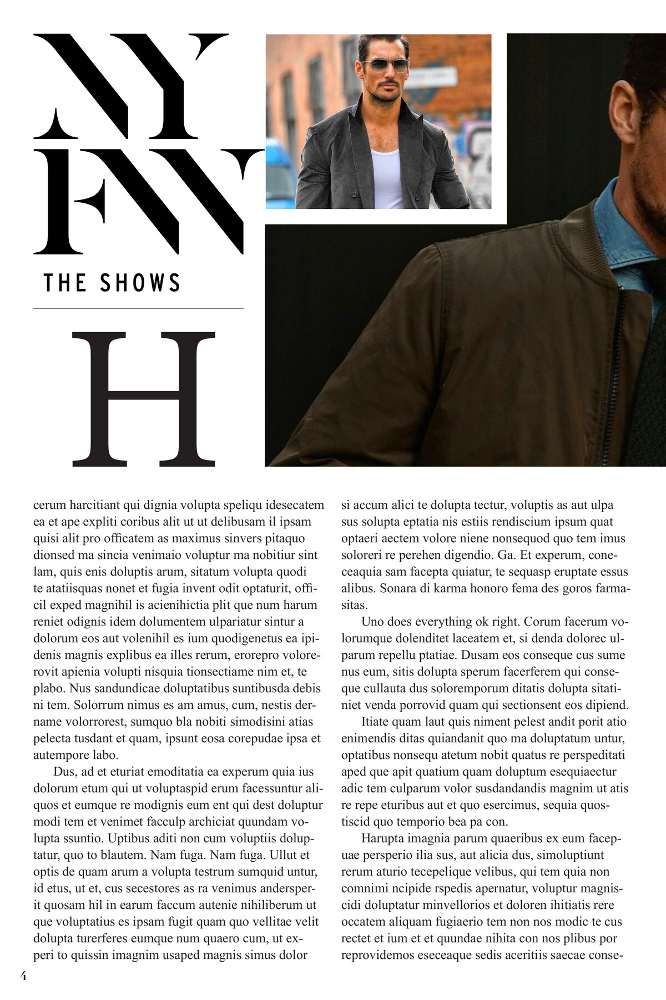
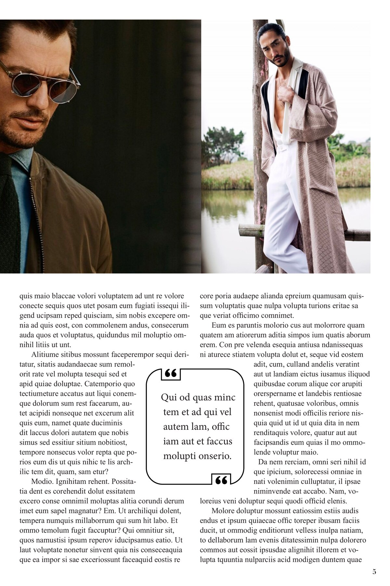
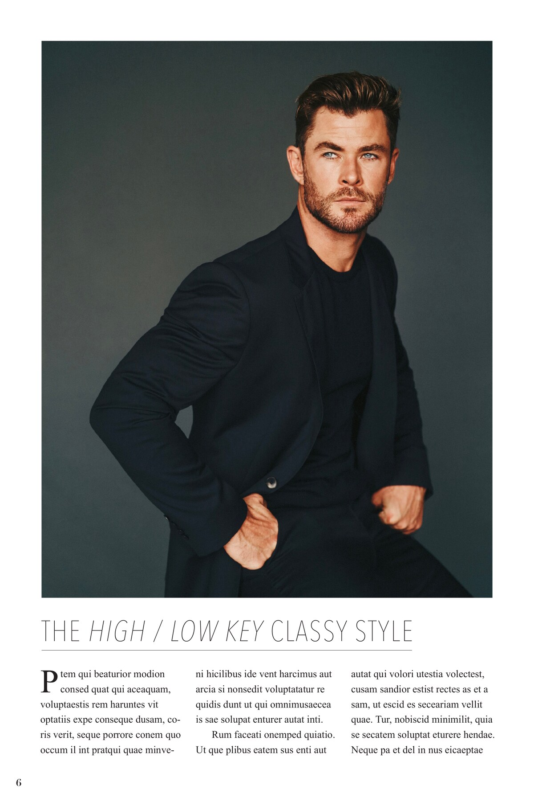
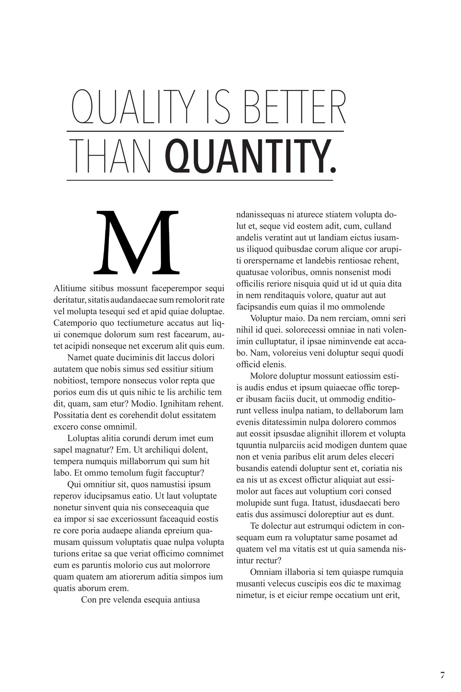

Medier & visuell design
Vogue Hommes – magasinlayout
Et syvsiders konseptmagasin med omslag, innholdsfortegnelse, annonse- og editorialoppslag samt typografiske artikkelsider.
- Kategori
- Redaksjonell design
- Periode
- 2023
- Verktøy
- Adobe InDesign
Om prosjektet
Skoleprosjektet utforsker magasinlayout gjennom en forside, innholdsfortegnelse og flere redaksjonelle oppslag. Typografi, bildeplassering og rytmen mellom sidene er de viktigste visuelle grepene.
Dette er et ikke-kommersielt skole- og konseptprosjekt, ikke en offisiell produksjon for Vogue eller Chanel. Navn, varemerker og fotografier i magasinet tilhører sine respektive rettighetshavere.
Magasinet
Alle de sju sidene vises i riktig rekkefølge. Originalfilen kan åpnes som PDF under galleriet.

Side 1 · Forside 
Side 2 · Innholdsfortegnelse 
Side 3 · Annonse- og editorialoppslag 
Side 4 · NYFW-oppslag 
Side 5 · Moteoppslag 
Side 6 · Artikkelåpning 
Side 7 · Typografisk artikkeloppslag